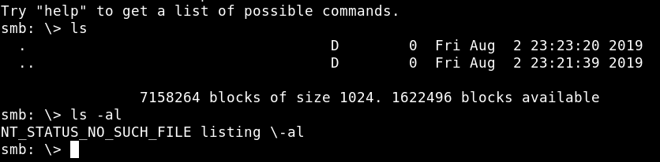

a) Try to access to “ITDEPT" directory with “smbclient” command annd with a blank password.
$ smbclient //192.168.12.33/ITDEPT
Output: 
As you see there's nothing not even hidden files we can access.
If we run “ls” command or “ls -la” we don't find anything. But we can create some files there.
b) Uploading files.
As you can see in “Enumeraiton directory” point e, there are two files that are run constantly by “cron”. So let's create those same files and upload them to the server.